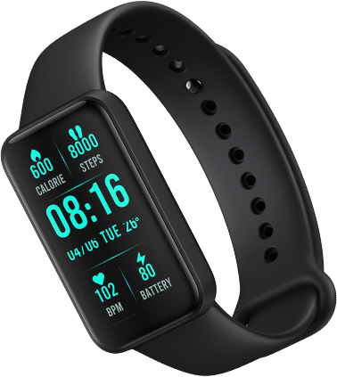

<link href="./assets/css/main.css" rel="stylesheet">

<main class="overview-con redmi-smart-band-pro">
            
<div class="section section-o1 lazy is-visible" data-type="bg" data-id="d9hs9xcb2s" data-background-image="./assets/media/section01bgs.jpg" data-loaded="true" style="background-image: url(./assets/media/section01bgs.jpg);">

<div class="text-content gray">
  


<span data-key="slogan_1" class="xm-text f46 f-regular" data-type="text" data-id="blxrgb17wl">Mais tela, mais saúde</span>
                
<div data-id="8dnk3wt90w" class="xm-price price f60 f-regular">
  
<span class="xm-price__label"></span>
<span class="xm-price__sNum"></span></div></div>




</div>

<div class="section section-o101 lazy is-visible" data-type="bg" data-id="kax6s604rd" data-background-image="./assets/media/section0201.jpg" data-loaded="true" style="background-image: url(./assets/media/section0201.jpg);">
              

  


<div class="item item01">
  
<span data-key="ksp_1" class="xm-text f56 f-heavy" data-type="text"  data-id="baiissdt00">Mais de 110</span>
<span data-key="ksp_2" class="xm-text f24 f-regular" data-type="text" data-id="nfwizcp92c">Modos de Treino</span></div>
              
<div class="item item02">

<span data-key="ksp_4" class="xm-text f30 f-bold" data-type="text" data-id="o0r43r9hgu">Tela AMOLED Always-on</span>
<span data-key="ksp_5" class="xm-text f24 f-regular" data-type="text" data-id="9obb8m3m73">sempre ativa</span></div>
              
<div class="item item03">
<span data-key="ksp_6" class="xm-text f30 f-bold" data-type="text" data-id="vdzq68bc78">Tudo sobre o seu sono </span>
<span data-key="ksp_7" class="xm-text f24 f-regular" data-type="text" data-id="hids4057m4">monitoramento Completo</span></div>

<div class="item item04">
<span data-key="ksp_15" class="xm-text f30 f-bold" data-type="text" data-id="7ax18wuasu">Até 14 dias</span>
<span data-key="ksp_16" class="xm-text f24 f-regular" data-type="text" data-id="ppeugd2pom">de bateria<sup>2</sup></span></div>

<div class="item item05">
<span data-key="ksp_12" class="xm-text f30 f-bold" data-type="text" data-id="e77xn7dtie">5 ATM</span>
<span data-key="ksp_13" class="xm-text f24 f-regular" data-type="text" data-id="ftpz37g23l">de resistência à água</span></div>
              
<div class="item item06">
<span data-key="ksp_10" class="xm-text f30 f-bold" data-type="text" data-id="0uqeue8muc">Monitoramento SpO2</span>
<span data-key="ksp_11" class="xm-text f24 f-regular" data-type="text" data-id="5qpfy455e0">nível de oxigênio no sangue<sup>1</sup></span></div>
              
<div class="item item07">
<span data-key="ksp_8" class="xm-text f30 f-bold" data-type="text" data-id="c03utnnew2"> Frequência Cardíaca</span>
<span data-key="ksp_9" class="xm-text f24 f-regular" data-type="text" data-id="b9qifa333k">monitorada 24 horas</span>
</div></div>

<div class="lazy" data-type="bg" data-id="hszvymk2bv" data-background-image="" data-loaded="true">
<div class="pin-spacer" style="z-index: auto; float: none; flex-shrink: 1; display: block; margin: 0px; inset: 0px; position: relative; overflow: visible; box-sizing: border-box; width: 1903px; height: 1760px; padding: 0px 0px 880px;">
                
<div class="scroll-parallax section-o2" style="transform: translate3d(0px, 0px, 0px); inset: 0px auto auto 0px; margin: 0px; max-width: 1903px; width: 1903px; max-height: 880px; height: 880px; padding: 0px;">
                  
<div class="div-mask white" style="transform: translate(0px, 0px);">
                    
<div class="text">
<span data-key="overview_1" class="xm-text f72 f-bold" data-type="text" data-id="sxmv6ln02q">Tudo o que você precisa ver em uma tela </span>
<span data-key="overview_2" class="xm-text f72 f-bold" data-type="text" data-id="wlenx1bbjk">AMOLED de 1,47</span>
<span data-key="overview_3" class="xm-text f26 f-light" data-type="text" data-id="n9xjz74klb">A Tela Full AMOLED de 1,47” traz um alto aproveitamento de tela com proporção de 66,7%<sup>3</sup>, proporcionando uma experiência visual raramente vista em pulseiras inteligentes. Agora é possível ver mais itens na tela, controlá-los e navegar por eles de forma simples.</span></div></div>

<div class="first-pin">
</div>
                  
<div class="sec-pin" style="opacity: 0;">


</div></div></div></div>

<div class="section section-o3 lazy is-visible" data-type="bg" data-id="afnhzo1gxn" data-background-image="./assets/media/section03.jpg" data-loaded="true" style="background-image: url(./assets/media/section03.jpg);">

<div class="item item01 black">
<div class="text-content">
<span data-key="overview_4" class="xm-text f72 f-bold" data-type="text" data-id="h2m6agdfj7">Tela Vívida e Brilhante</span>
<span data-key="overview_5" class="xm-text f26 f-light" data-type="text" data-id="6r2f3jqcr1">A tela é 100% equipada com NTSC, isso significa uma gama completa de cores disponíveis para você visualizar. O brilho máximo de 450 nits garante visibilidade clara e nítida mesmo sob a luz do sol.</span>

<div class="text-list">
<div class="text text01">
                      
<div class="items">
<span data-key="overview_6" class="xm-text f38 f-bold txt" data-type="text" data-id="tsr0ju9qxs">100% NTSC</span>
<span data-key="overview_7" class="xm-text f24 f-light" data-type="text" data-id="wuje4fibbc">Cores realistas</span>
</div>
                      
<div class="items mt66">
<span data-key="overview_10" class="xm-text f38 f-bold txt" data-type="text" data-id="yan5erjj6e">194 x 368 pixels</span>
<span data-key="overview_11" class="xm-text f24 f-light" data-type="text" data-id="3ucpx92ezk">Clareza espetacular</span>
</div></div>
                    
<div class="text text02">
<div class="items">
<span data-key="overview_8" class="xm-text f38 f-bold txt" data-type="text" data-id="nttyeu62pd">Brilho máximo de 450 nits</span>
<span data-key="overview_9" class="xm-text f24 f-light" data-type="text" data-id="qzvdd7z857">Visibilidade clara sob a luz do sol</span>
</div>

<div class="items mt66">
<span data-key="overview_12" class="xm-text f38 f-bold txt" data-type="text" data-id="8jql7pkfig">Mais de 50 Band faces</span>
<span data-key="overview_13" class="xm-text f24 f-light" data-type="text" data-id="4p6ktf1zyn">Sincronize a tela inicial com o seu estilo</span>
</div></div></div></div></div>

<div class="item item02 black">
<span data-key="overview_14" class="xm-text f72 f-bold" data-type="text" data-id="noypwuglfd">Suave e Confortável</span>
<span data-key="overview_15" class="xm-text f26 f-light" data-type="text" data-id="488cce9ogt">Criada para ser suave e leve, a pulseira inteligente é confortável para ser usada dia todo.</span>
</div></div>

<div class="section section-o4 lazy is-visible" data-type="bg" data-id="9ezn2xynxe" data-background-image="" data-loaded="true">

<div class="text-content black">
<span data-key="overview_16" class="xm-text f72 f-bold" data-type="text" data-id="iopqip3x7w">Mais de 110 Modos de Treino</span>
<span data-key="overview_17" class="xm-text f26 f-light" data-type="text" data-id="awji55r8dz">Escolha entre mais de 110 modalidades esportivas para monitorar e melhorar o seu condicionamento físico. Acompanhe a queima de calorias, alterações da frequência cardíaca e a duração dos seus treinos. Os 15 modos profissionais disponíveis, exibem métricas simples e precisas para que você entenda tudo sobre o seu desempenho. Mantenha a sua energia, confiança e força sempre em dia com a Pulseira Inteligente Redmi Smart Band Pro.</span></div>

<div class="icon-list">
<div class="item">
<div class="icon-box">
</div>

<span data-key="overview_18" class="xm-text f26 f-light" data-type="text" data-id="qnugl25owq">Corrida ao ar livre</span></div>

<div class="item">
<div class="icon-box">
</div>
<span data-key="overview_19" class="xm-text f26 f-light" data-type="text" data-id="1ko3sez3bw">Esteira</span></div>

<div class="item">
<div class="icon-box">
</div>
<span data-key="overview_20" class="xm-text f26 f-light" data-type="text" data-id="lwyx03z8aq">Caminhada</span></div>
                
<div class="item">
<div class="icon-box">
</div>

<span data-key="overview_21" class="xm-text f26 f-light" data-type="text" data-id="ctzvtjh3nq">Ciclismo ao ar livre</span></div>

<div class="item">
<div class="icon-box">
</div>

<span data-key="overview_22" class="xm-text f26 f-light" data-type="text" data-id="ev28uiwgp7">Ciclismo ao ar livre</span></div>
                
<div class="item">
<div class="icon-box">
</div>
<span data-key="overview_23" class="xm-text f26 f-light" data-type="text" data-id="hpson0t4yz">Caminhada intensa</span></div>

<div class="item">
<div class="icon-box">
</div>

<span data-key="overview_24" class="xm-text f26 f-light" data-type="text" data-id="n35obn906e">Corrida em trilha</span></div>
  
<div class="item">
<div class="icon-box">
</div>

<span data-key="overview_25" class="xm-text f26 f-light" data-type="text"data-id="53s6zsjzaj">Ciclismo interno</span></div>

<div class="item">
<div class="icon-box">
</div>

<span data-key="overview_26" class="xm-text f26 f-light" data-type="text" data-id="lhlcdvs259">Elíptico</span> </div>
<div class="item">
<div class="icon-box">
</div>
<span data-key="overview_27" class="xm-text f26 f-light" data-type="text" data-id="nsgt0bnqw8">Aparelho de remada</span></div>
                
<div class="item">
<div class="icon-box">
</div>

<span data-key="overview_28" class="xm-text f26 f-light" data-type="text" data-id="7g5eue1k4s">Corda</span></div>

<div class="item">
<div class="icon-box">
</div>

<span data-key="overview_29" class="xm-text f26 f-light" data-type="text" data-id="48crlqmzut">HIIT</span></div>

<div class="item">
<div class="icon-box">
</div>

<span data-key="overview_30" class="xm-text f26 f-light" data-type="text" data-id="on3z2tx8w8">Ioga</span></div>
<div class="item">
<div class="icon-box">
  
</div>

<span data-key="overview_31" class="xm-text f26 f-light" data-type="text" data-id="71fedwa5og">Treino livre</span></div>

<div class="item">
<div class="icon-box">
</div>
<span data-key="overview_32" class="xm-text f26 f-light" data-type="text"data-id="btbpjkadfh">Natação e muito mais</span></div>
                
<div class="item">
<div class="icon-box">
</div>
</div></div></div>
            
<div class="section section-o5 lazy is-visible" data-type="bg" data-id="yqu72tnxwu" data-background-image=""data-loaded="true">
<div class="left-img-box">


</div>

<div class="text-content white">
<div class="text text01">
<div class="item">
<span data-key="overview_35" class="xm-text f72 f-bold" data-type="text" data-id="ozxxgatric">Modo Corrida em Trilhas</span>
<span data-key="overview_36" class="xm-text f26 f-light" data-type="text" data-id="dgsb147flo">Preparado para fazer novas trilhas? A pulseira inteligente acompanha seu ritmo geral até nos terrenos mais acidentados, assim, você se concentra apenas em sua corrida.</span></div></div>

<div class="text text02 istextactive">
<div class="item">
<span data-key="overview_33" class="xm-text f72 f-bold" data-type="text" data-id="62qr28pli4">Modo Ioga</span>
<span data-key="overview_34" class="xm-text f26 f-light" data-type="text" data-id="qhkbd3yfhd">Equilíbrio, força e autoconsciência. A pulseira inteligente acompanha cada alongamento com muita precisão.</span></div></div>

<div class="icon-list">
<div class="btn btn01"></div>
<div class="btn btn02 isactive">
</div></div></div>
              
<div class="right-img-box">


</div></div>

<div class="section section-o6 lazy is-visible" data-type="bg" data-id="wiyxi7sgzl" data-background-image="./assets/media/section06.jpg" data-loaded="true" style="background-image: url(./assets/media/section06.jpg);">
              
<div class="text-content black">
<span data-key="overview_37" class="xm-text f72 f-bold" data-type="text" data-id="fc6chf74jq">Comece o seu treino quando quiser</span>
<span data-key="overview_38" class="xm-text f26 f-light feature" data-type="text" data-id="3r9ui5zmdc">A Pulseira Inteligente Redmi Smart Band Pro detecta automaticamente 3 modos de atividades físicas<sup>4</sup>:  esteira, corrida ao ar livre e caminhada. Apenas comece o seu treino e a pulseira te dá o suporte. </span>
</div>
              
<div class="img-box">


</div>
              
<div class="icon-list black">
<div class="item">


<span data-key="overview_39" class="xm-text f26 f-medium" data-type="text" data-id="ag90vcpymo">Esteira </span></div>
                
<div class="item isexpand">


<span data-key="overview_40" class="xm-text f26 f-medium" data-type="text" data-id="9p8e27v8xl">Corrida ao ar livre</span></div>
<div class="item">


<span data-key="overview_41" class="xm-text f26 f-medium" data-type="text" data-id="b95ul0rt2e">Caminhada</span></div>
</div></div>

<div class="section section-o7 lazy is-visible" data-type="bg" data-id="hboo21aqih" data-background-image="./assets/media/section07.jpg" data-loaded="true" style="background-image: url(./assets/media/section07.jpg);">
              
<div class="text-content black">
<span data-key="overview_44" class="xm-text f72 f-bold" data-type="text" data-id="n2pqrn3pc8">Resistência à água de até 50 metros</span>
<span data-key="overview_45" class="xm-text f26 f-light feature" data-type="text" data-id="8n6fzxz6qw">A classificação de resistência à água de 5 ATM<sup>5</sup>, protege a pulseira em até 50 metros. Use a pulseira em qualquer lugar, durante um banho frio em casa ou nas águas rasas da praia.</span>
</div></div>
            
<div class="section section-o8 lazy is-visible" data-type="bg" data-id="zis47o4ge9" data-background-image="./assets/media/section08.jpg" data-loaded="true" style="background-image: url(./assets/media/section08.jpg);">
              
<div class="text-content black">
<span data-key="overview_46" class="xm-text f42 f-bold" data-type="text" data-id="tywyus886n">Acompanhe as batidas do seu coração</span>
<span data-key="overview_48" class="xm-text f26 f-light" data-type="text" data-id="uluo3exu8q">A Pulseira Inteligente Redmi Smart Band Pro monitora 24h por dia a sua frequência cardíaca em tempo real e entrega análises precisas em gráficos muito fáceis de ler. Se algum batimento cardíaco sair da sua zona de segurança, a pulseira vibrará para te alertar.</span>

<span data-key="overview_49" class="xm-text f18 f-light feature" data-type="text" data-id="25ypfretgm">*As imagens e os dados de frequência cardíaca mostrados aqui, são apenas exemplos. As zonas de frequência cardíaca podem variar de acordo com cada indivíduo.</span>
                
<div class="icon-list">
<div class="item">

                    
<div class="text">
<div class="txt">
<span data-key="overview_50" class="xm-text f40 f-bold" data-type="text" data-id="o51pulgl1q">145</span>
<span data-key="overview_51" class="xm-text f20 f-medium" data-type="text" data-id="de94zw0als">pbm</span></div>
<span data-key="overview_52" class="xm-text f18 f-light desc" data-type="text" data-id="bhc0787pgu">durante atividade física intensa</span>
</div></div>
                  
<div class="item">

                    
<div class="text">
<div class="txt">
<span data-key="overview_53" class="xm-text f40 f-bold" data-type="text" data-id="g9lq58trqe">175</span>
<span data-key="overview_54" class="xm-text f20 f-medium" data-type="text" data-id="enfeje4jsv">pbm</span></div>
<span data-key="overview_55" class="xm-text f18 f-light desc" data-type="text" data-id="xf5ax8wgiv">frequência cardíaca atípica</span>
</div></div>
                  
<div class="item">


<div class="text">
<div class="txt">
<span data-key="overview_56" class="xm-text f40 f-bold" data-type="text" data-id="j9sqeud9xa">79</span>
<span data-key="overview_57" class="xm-text f20 f-medium" data-type="text" data-id="qn2sfv7n8j">pbm</span></div>
<span data-key="overview_58" class="xm-text f18 f-light desc" data-type="text" data-id="1qhz7asiu3">frequência cardíaca normal</span>
</div></div>

<div class="item">

                
<div class="text">
<div class="txt">
<span data-key="overview_59" class="xm-text f40 f-bold" data-type="text" data-id="9pmud53be3">65</span>
<span data-key="overview_60" class="xm-text f20 f-medium" data-type="text" data-id="v96na4nr12">pbm</span></div>
<span data-key="overview_61" class="xm-text f18 f-light desc" data-type="text" data-id="aw1mag569f">durante o sono</span>
</div></div></div></div></div>

<div class="section section-o9 lazy is-visible" data-type="bg" data-id="xkpwda0lkl" data-background-image="./assets/media/section09.jpg" data-loaded="true" style="background-image: url(./assets/media/section09.jpg);">
              
<div class="text-content black">
<span data-key="overview_62" class="xm-text f42 f-bold" data-type="text" data-id="qu6enqau5x">Meça seus níveis de oxigênio no sangue</span>
<span data-key="overview_63" class="xm-text f72 f-bold" data-type="text" data-id="yws4t4os3e">Rastreamento de SpO2</span>
<span data-key="overview_64" class="xm-text f26 f-light" data-type="text" data-id="sotrcsjfh0">A saturação de oxigênio no sangue (SpO2) é um indicador importante para a sua saúde geral, refletindo os níveis de oxigênio no sangue. A pulseira inteligente mede automaticamente o nível de SpO2 durante a sua noite de sono ou manualmente sempre que você precisar<sup>6</sup>.</span></div></div>

<div class="lazy" data-type="bg" data-id="hszvymk2bv" data-background-image="" data-loaded="true">
<div class="pin-spacer" style="z-index: auto; float: none; flex-shrink: 1; display: block; margin: 0px; inset: 0px; position: relative; overflow: visible; box-sizing: border-box; width: 1903px; height: 2914px; padding: 0px 0px 1457px;">

<div class="scroll-parallax section-o10" style="transform: translate3d(0px, 0px, 0px); inset: 0px auto auto 0px; margin: 0px; max-width: 1903px; width: 1903px; max-height: 1456.98px; height: 1456.98px; padding: 0px;">

<div class="div-mask white" style="transform: translate(0px, 0px);">
<div class="text">
<span data-key="overview_65" class="xm-text f72 f-bold" data-type="text" data-id="7ufbynxajq">Monitore a qualidade do seu sono</span>
<span data-key="overview_66" class="xm-text f26 f-light feature" data-type="text" data-id="14b5jo43xu">Quer saber o que acontece com o seu corpo durante uma noite de sono? <br> A Redmi Smart Band Pro monitora os seus padrões de sono com cuidado e precisão para que você se conheça ainda mais.
</span></div></div>

<div class="first-pin">
</div>


                  
<div class="text-content">
<span data-key="overview_67" class="xm-text f52 f-bold" data-type="text" data-id="ho1o49vtlk">Sono tranquilo e seguro</span>
<span data-key="overview_68" class="xm-text f26 f-light desc" data-type="text" data-id="gf9kjqxqrz">Verifique as estatísticas detalhadas sobre o sono profundo, leve e fase REM<sup>7</sup>. Os dados serão exibidos no seu smartphone e podem ajudar você a melhorar a qualidade das suas noites de descanso. </span>
</div></div></div></div>

<div class="section section-o11 lazy is-visible" data-type="bg" data-id="5lyfw2mgly" data-background-image="./assets/media/section11s.jpg" data-loaded="true" style="background-image: url(./assets/media/section11s.jpg);">
              
<div class="text-content">
<span data-key="overview_69" class="xm-text f72 f-bold" data-type="text" data-id="ldlnbmjkwv">Mais sobre a sua saúde</span></div>
<div class="item item01">
<span data-key="overview_70" class="xm-text f42 f-bold" data-type="text" data-id="drx8j5tqvg">Monitoramento do nível de estresse</span>
<span data-key="overview_71" class="xm-text f26 f-light" data-type="text" data-id="1qy6fqtt9l">Conheça seus níveis de estresse para que você consiga lidar cada vez melhor com eles. A pulseira te ajuda a entender quando o seu corpo se esforça um pouco mais e indica um exercício de respiração profunda para te auxiliar.</span></div>

<div class="item item02">
<span data-key="overview_72" class="xm-text f42 f-bold" data-type="text" data-id="zl9ow3pgu2">Exercício de Respiração Profunda</span>
<span data-key="overview_73" class="xm-text f26 f-light" data-type="text" data-id="wkhxd5ib7a">O modo como você respira fundo pode mudar o seu dia. Faça um exercício de respiração profunda com orientação científica da sua pulseira inteligente.</span></div>
             
<div class="item item03">
<span data-key="overview_74" class="xm-text f42 f-bold" data-type="text" data-id="d20glu7cbl">Saúde Feminina</span>
<span data-key="overview_75" class="xm-text f26 f-light" data-type="text" data-id="wyqyp26uee">Registre seu período menstrual e receba lembretes com antecedência. Esteja preparada</span></div></div>
            
<div class="section section-o12 lazy is-visible" data-type="bg" data-id="8axr6h8fa1" data-background-image="./assets/media/section12.jpg" data-loaded="true" style="background-image: url(./assets/media/section12.jpg);">

<div class="text-content black">
<span data-key="overview_76" class="xm-text f72 f-bold" data-type="text" data-id="by0kuu3rli">Carregamento Magnético</span>
<span data-key="overview_77" class="xm-text f26 f-light" data-type="text" data-id="q0tb9dai3u">arregamento fácil e estável com um toque magnético.</span></div>
              
<div class="item white">
<span data-key="overview_78" class="xm-text f72 f-bold" data-type="text" data-id="1n7kta491i">Bateria para vários dias</span>
<span data-key="overview_79" class="xm-text f38 f-medium first" data-type="text" data-id="22i8qyx367">Até 14 dias em uso normal<sup>8</sup></span>
<span data-key="overview_80" class="xm-text f38 f-medium" data-type="text" data-id="7rjvtcfx32">Até 20 dias no modo de economia de energia<sup>9</sup></span>
</div></div>
            
<div class="section section-o13 lazy is-visible" data-type="bg" data-id="0t5mktt3t7" data-background-image="./assets/media/section13bg.jpg" data-loaded="true" style="background-image: url(./assets/media/section13bg.jpg);">

<div class="text-content black">
<span data-key="overview_81" class="xm-text f72 f-bold" data-type="text" data-id="i7gcr3xjkw">Aplicativo Xiaomi Wear/Xiaomi Wear Lite</span>
<span data-key="overview_82" class="xm-text f26 f-light" data-type="text" data-id="a5wwggchmw">Conecte a sua Pulseira Inteligente Redmi Smart Band Pro ao aplicativo Xiaomi Wear/Xiaomi Wear Lite para iniciar a sua jornada fitness inteligente. Obtenha relatórios abrangentes dos registros das suas atividades diárias e outras métricas de saúde.</span>


<span data-key="overview_83" class="xm-text f18 f-light feature" data-type="text" data-id="lcqzyajoo2">Compatível com STRAVA e Apple Health.</span>
      
<div class="line"></div>
<div class="icon-list">
<a class="xm-link btn" href="https://play.google.com/store/apps/details?id=com.xiaomi.wearable&amp;hl=en_gl=gl" data-type="button" data-id="u3ai7qqqz0" target="_blank">
  
</a>

<a class="xm-link btn" href="https://apps.apple.com/global/app/xiaomi-wear-lite/id1493500777" data-type="button" data-id="8rmcn5nzrp" target="_blank">
  
</a></div>

<span data-key="overview_84" class="xm-text f18 f-light tips" data-type="text" data-id="2j2kpuwg84">Os usuários do sistema Android precisam instalar o aplicativo Xiaomi Wear para conectar a pulseira e, os usuários do sistema iOS precisam instalar o app Xiaomi Wear Lite.	</span></div>

</div>

<div class="section section-o14 lazy is-visible" data-type="bg" data-id="iwc7trchfr" data-background-image="//i01.appmifile.com/webfile/globalimg/products/pc/redmi-smart-band-pro/section14.jpg" data-loaded="true" style="background-image: url(&quot;//i01.appmifile.com/webfile/globalimg/products/pc/redmi-smart-band-pro/section14.jpg&quot;);">
              
<div class="text-content white">
<span data-key="overview_85" class="xm-text f72 f-bold" data-type="text" data-id="comvceyh6j">Outras Funções Úteis</span>
               
<div class="icon-list">
<div class="item">


<span data-key="overview_87" class="xm-text f26 f-light" data-type="text" ata-id="istvvsar3x">Execução de músicas</span></div>
<div class="item">


<span data-key="overview_88" class="xm-text f26 f-light" data-type="text" data-id="x6wc9n0i1h">Previsão do tempo</span></div>
                  
<div class="item">


<span data-key="overview_89" class="xm-text f26 f-light" data-type="text" data-id="k6kqyp0753">Notificações<sup>12</sup></span></div>
<div class="item">


<span data-key="overview_90" class="xm-text f26 f-light" data-type="text" data-id="6jb04999jc">Não perturbe</span></div>
                  
<div class="item">


<span data-key="overview_91" class="xm-text f26 f-light" data-type="text" data-id="s1mzja4t2j">Alerta de ociosidade</span></div>
                  
<div class="item">


<span data-key="overview_92" class="xm-text f26 f-light" data-type="text" data-id="jeyhv2ldoo">Chamadas recebidas<sup>12</sup></span></div>
<div class="item">
  

<span data-key="overview_93" class="xm-text f26 f-light" data-type="text" data-id="qq20n67tuv">Alarmes</span></div>

<div class="item">


<span data-key="overview_94" class="xm-text f26 f-light" data-type="text" data-id="yp8dknackg">Temporizador</span></div>

<div class="item">

<span data-key="overview_95" class="xm-text f26 f-light" data-type="text" data-id="mi99elzftt">Encontre meu smartphone</span></div>
                  
<div class="item">

<span data-key="overview_96" class="xm-text f26 f-light" data-type="text" data-id="v51vf3r8n3">Cronômetro</span></div>
</div></div></div>

<div class="section section-o15 lazy is-visible" data-type="bg" data-id="xh8jn4zgy5" data-background-image="./assets/media/section15.jpg" data-loaded="true" style="background-image: url(./assets/media/section15.jpg);">
              
<a class="xm-link f64 f-bold black xm-button" href="#" data-type="button"
data-id="e56p0pok0s" target="_self">Compre Agora</a></div>
          
<div class="section section-o16 lazy is-visible" data-type="bg" data-id="p1qhgkajp5" data-background-image="" data-loaded="true">
              
<div class="text-content black">
<span data-key="Note_1" class="xm-text f16 f-light" data-type="text" data-id="sisoj2rcpp" style="font-size:0.078125rem">

    1. Este produto e seus recursos não foram projetados para diagnosticar, prevenir ou curar qualquer doença.

    2. Todos os dados de teste de duração de bateria foram obtidos dos Laboratórios 70mai. Vários fatores podem influenciar na autonomia da bateria, como as configurações utilizadas, a forma como o dispositivo é usado, condições ambientais e etc. Todos esses fatores podem resultar em resultados diferentes para a vida útil da bateria.

    3. Os dados da tela foram obtidos pelo laboratório da Xiaomi. A tela foi desenhada com bordas arredondadas e medida como um retângulo padrão.

    4. Detecção automática dos modos de atividades físicas: a detecção automática precisa ser ativada em sua pulseira. Depois que o treino é detectado, os usuários precisam confirmar o tipo de atividade que será praticada para que a pulseira continue monitorando a atividade completa.

    5. Resistência à água de até 50 metros: é baseada no padrão GB/T 30106-2013 e foi testada pelo Centro Nacional de Supervisão e Teste de Qualidade Horológica da China. Os números do relatório de resistência à água são: QT2108085. A pulseira inteligente tem classificação de 5 ATM (50 metros de profundidade). Pode ser usada em piscina, ao nadar perto da costa do mar ou durante outras atividades em águas rasas. Não use a pulseira em banhos quentes, sauna ou mergulho. Lembre-se de evitar impactos rápidos de correntes de água durante a prática de esportes aquáticos. A função de resistência à água pode diminuir com o tempo. 

    6. O recurso de saturação de oxigênio no sangue não se destina a diagnóstico, prevenção, monitoramento, previsão, prognóstico de qualquer doença ou investigação de processos fisiológicos ou qualquer outra finalidade médica. Todos os dados de rastreamento devem ser usados apenas para o bem-estar e referências pessoal. Se você se sentir desconfortável, confie em dispositivos médicos profissionais ou consulte um médico para receber assistência adequada.

    7. REM: o usuário precisa ativar o monitoramento avançado de sono em configurações adicionais, no aplicativo Xiaomi Wear/Xiaomi Wear lite para ter este recurso.

    Outras notas:

    8. As condições de teste da bateria da Redmi Smart band pro no modo de uso normal são as seguintes: Totalmente carregada; a cada 30 minutos o monitoramento de frequência cardíaca é ativado; monitoramento avançado do sono desativado; detecção de estresse desabilitada; função ligar ao levantar pulso ativada; notificações de mensagens ativadas; todas as configurações definidas para os padrões de fábrica; 100 notificações recebidas e exibidas por dia; 2 alarmes por dia; cada um com 5 segundos de vibração; 100 ativações da função ligar ao levantar o pulso; sincronização de dados com o aplicativo uma vez por dia;  medição manual de nível de saturação de oxigênio no sangue duas vezes ao dia; rastreamento de exercícios com duração de 60 minutos por semana.

    9. As condições de teste da bateria da Redmi Smart Band Pro no modo economia de energia são as seguintes: Totalmente carregada, monitoramento automático de frequência cardíaca desativado; monitoramento avançado de  sono desativado; função ligar ao levantar o pulso desativada; 100 notificações recebidas e exibidas por dia; 2 alarmes por dia, cada um com 5 segundos de vibração; tela desbloqueada 10 vezes por dia; sincronização de dados com o aplicativo uma vez por dia; medição de saturação de oxigênio no sangue duas vezes ao dia; 

    10. Strava e todos os logotipos relacionados são marcas registradas de desenvolvedores Strava.com;

    11. Apple Health e todos os logotipos relacionados são marcas registradas dos desenvolvedores Apple.com

    12. Recursos que incluem, mas não se limitam a notificações de mensagens e chamadas recebidas, exigem que o Xaiomi Wear/Xaiomi Wear Lite seja executado constantemente em segundo plano. Para obter mais informações, consulte a configuração no próprio aplicativo.

    13. Todas as imagens, áudios ou vídeos usados aqui são apenas para fins ilustrativos de demonstrar a funcionalidade do produto e não representam o produto em sua totalidade.

    *As band faces específicas podem ser removidas no futuro, se ocorrer expiração de direitos autorais. Consulte a disponibilidade.

</span></div></div>
</main>

<script src="./assets/js/windown.js"></script>